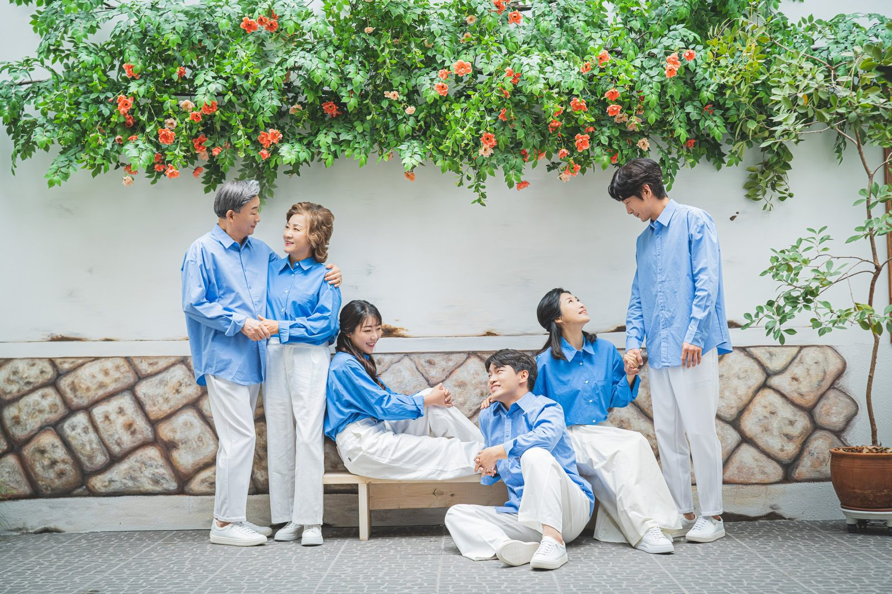
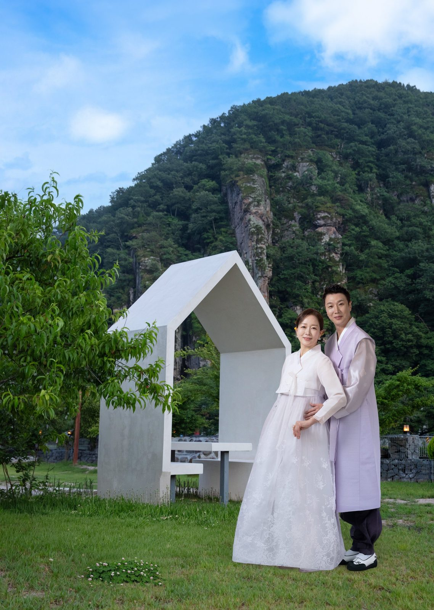
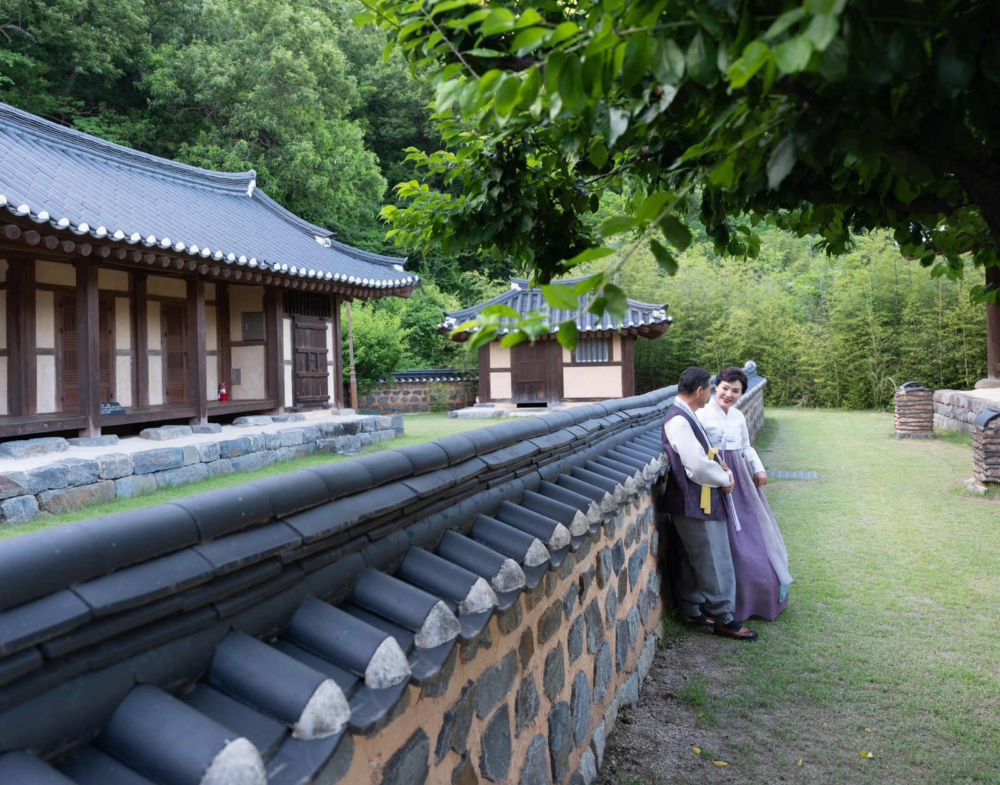
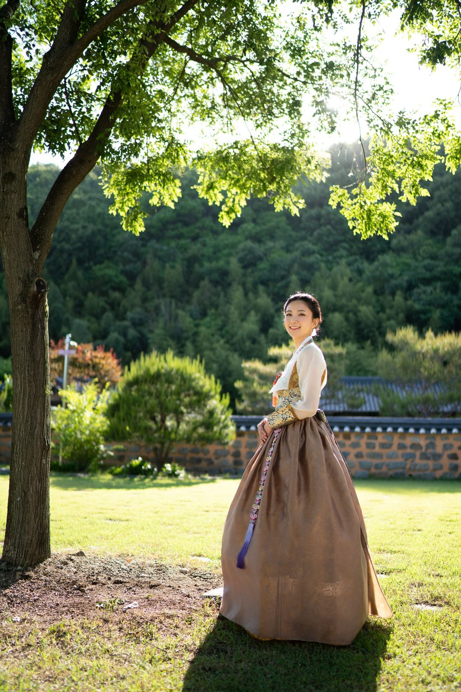
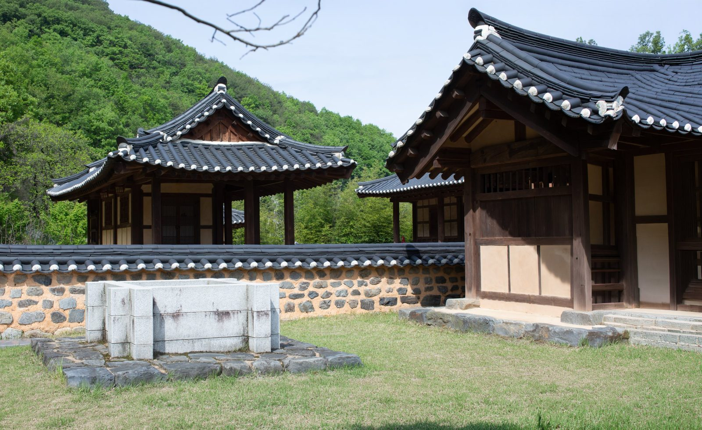
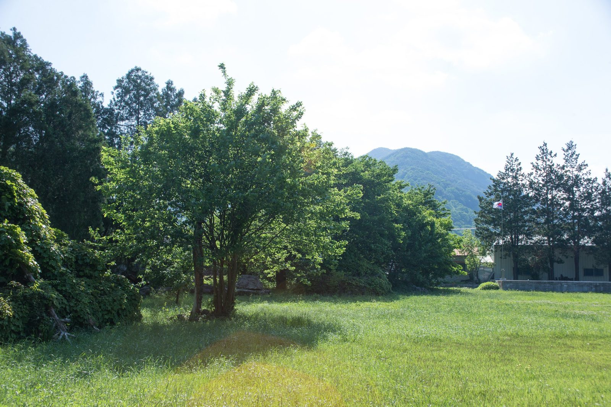
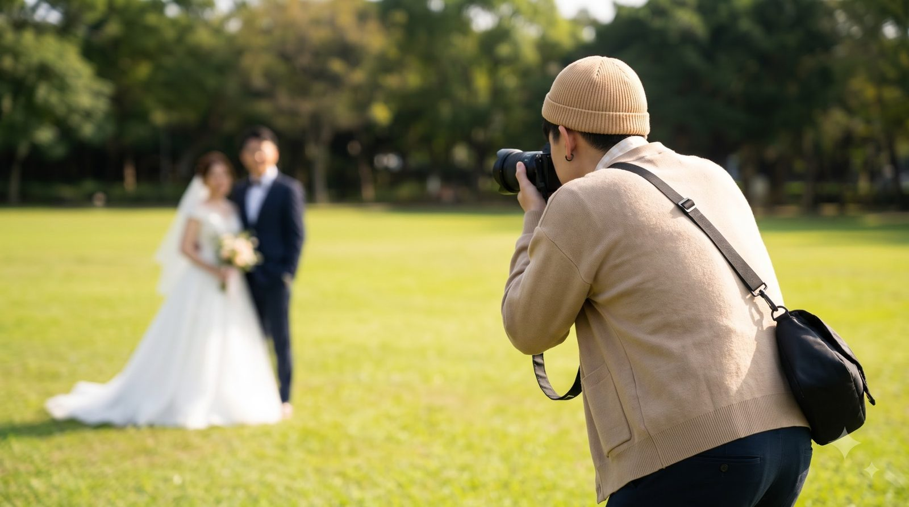

창원 야외 가족사진 — 바람이 지나간 자리에 가족이 선다
2026-10-20 발행
창원 야외 가족사진은 하늘 아래에서 가족을 담는 촬영입니다. 실내 스튜디오의 조명을 잠시 끄고 바람과 햇빛 속으로 나가면 사진의 온도가 달라집니다. 아이가 뛰고 어르신이 웃고 그 사이로 바람이 지나갑니다. 그 소란스러움이 가족의 지금을 가장 정확하게 남깁니다.

사랑이야기 스튜디오 창원점은 경남 창원시 성산구 원이대로 652, 상남동 롯데빌딩 2층에 있습니다. 야외 촬영은 창원에서 차로 조금 더 내려간 의령점 야외촬영장에서 합니다. 김작가사진이야기 의령점은 경남 의령군 궁류면 청정로 1188, 천여 평 부지에 야외촬영장과 독채 펜션이 함께 있는 곳입니다.
야외 사진은 빛이 절반입니다. 해가 높이 떠 있는 한낮은 그림자가 짧고 얼굴에 그늘이 지기 쉽습니다. 그래서 오전 열 시에서 열한 시 사이, 오후 네 시가 지난 뒤를 주로 씁니다. 빛이 비스듬히 들어오는 시간에 얼굴의 윤곽이 부드러워지고, 나무 그림자도 배경의 일부가 됩니다.

계절마다 답이 다릅니다. 봄에는 꽃이 배경이 되고, 여름에는 나무 그늘이 가장 좋은 스튜디오가 됩니다. 가을은 단풍과 낮은 햇빛이 어울리고, 겨울은 눈이 오는 날 한 번이면 충분합니다. 같은 자리에서도 계절이 바뀌면 사진이 완전히 달라집니다. 그래서 야외 촬영은 계절을 먼저 정하고 날짜를 잡는 편이 좋습니다.
아이들은 세워 두지 않는 편이 좋습니다. 뛰게 두고 그 뒤를 따라가며 찍습니다. 웃는 얼굴을 만들려고 애쓰는 순간보다, 형이나 누나를 쫓아가다 넘어질 듯 웃는 순간이 훨씬 좋은 사진이 됩니다. 부모님은 그 모습을 옆에서 보고 계시면 됩니다. 아이가 지치면 사진도 지칩니다. 그래서 중간에 쉬는 시간을 꼭 넣습니다.

어르신이 함께 오시면 그늘과 의자를 먼저 준비합니다. 서서 찍는 단체 사진을 오래 하면 체력이 먼저 지치십니다. 앉아서 찍는 컷을 먼저 만들고, 서는 사진은 마지막에 짧게 찍습니다. 순서를 바꾸는 것만으로 표정이 달라집니다. 어르신 사진은 한 장을 오래 공들여 찍는 편이 낫습니다.
옷은 가족끼리 톤을 맞추면 사진이 정돈됩니다. 한복은 야외에서 특히 잘 어울립니다. 기와와 돌담, 잔디가 한복의 색을 받아 줍니다. 캐주얼이라면 흰 셔츠에 청바지처럼 단순한 조합이 배경과 부딪히지 않습니다. 같은 색을 똑같이 맞추기보다, 한두 가지 색으로 나눠 입으면 사진이 훨씬 편안해집니다.

촬영은 보통 실내에서 한두 컷을 찍고 야외로 나갑니다. 실내에서 얼굴을 먼저 익히면 야외에서 긴장이 덜합니다. 야외에서는 넓게 서는 사진, 걸어오는 사진, 앉아서 찍는 사진 순서로 이어 갑니다. 걷는 사진은 발걸음이 맞지 않아도 괜찮습니다. 오히려 조금 어긋난 걸음이 자연스럽습니다.

야외 촬영에서 가장 자주 받는 질문이 날씨입니다. 창원 야외 가족사진은 비가 와도 촬영이 가능한가요? 네, 가능합니다. 실내 공간으로 옮겨 찍거나 날짜를 함께 조정합니다. 흐린 날은 오히려 빛이 고르게 퍼져 얼굴이 깨끗하게 나옵니다. 햇빛이 강한 날보다 표정이 편한 경우도 많습니다.
준비물은 생각보다 적습니다. 편한 신발, 여벌 옷 한 벌, 아이 물병과 간식 정도면 충분합니다. 야외는 실내보다 먼지가 있고 잔디에 앉을 일도 있습니다. 흰 옷을 입으셨다면 여벌을 챙기시는 편이 좋습니다. 액세서리는 하나만 눈에 띄게 하는 편이 사진에서는 낫습니다. 모자나 목도리는 바람에 날릴 수 있으니 촬영 직전에 정리하는 편이 좋습니다. 아이들은 좋아하는 인형을 하나씩 들고 오면 표정이 훨씬 편해집니다.

메이크업과 헤어도 함께 합니다. 야외는 실내보다 빛이 강해서 화장이 옅게 보입니다. 그래서 평소보다 조금 진하게 잡습니다. 헤어는 바람에 흐트러질 수 있으니 단단하게 고정하는 편이 좋습니다. 촬영 중간에 머리를 정리할 시간도 넣어 둡니다.
의령점에는 독채 펜션이 함께 있습니다. 촬영이 끝난 뒤 가족이 하룻밤 머물며 식사와 이야기를 나눌 수 있습니다. 김작가사진이야기펜션은 의령사진관 옆 1,000평 부지에 있는 독채 펜션입니다. 촬영과 숙소를 한 번에 정하면 가족이 모이는 날이 더 길어집니다.

대가족이라면 인원을 미리 알려 주세요. 열 명이 넘으면 서는 위치와 순서를 먼저 정합니다. 키가 큰 분은 뒤로, 아이는 앞으로, 어르신은 의자에 앉히는 식입니다. 순서를 정해 두면 촬영이 빨라지고 표정도 덜 굳습니다. 같은 자리에서 두어 번 찍으면 충분합니다.
촬영이 끝나면 사진을 함께 봅니다. 야외 사진은 멀리서 찍은 컷이 좋습니다. 가족이 작게 서 있어도 배경과 함께 한 장이 되기 때문입니다. 거실에 걸 액자는 그런 넓은 컷으로 고르시면 좋습니다. 가까이에서 찍은 얼굴 사진은 방 안이나 선물용으로 나누시면 됩니다.

예약은 한 달 전쯤이 좋습니다. 주말과 단풍철, 벚꽃철은 더 일찍 마감됩니다. 날짜를 정하실 때는 가족 모두의 일정을 먼저 맞춰 보세요. 한 사람이 빠지면 그날은 다시 오지 않습니다. 촬영 날짜가 정해지면 전날은 푹 쉬시는 것이 가장 좋은 준비입니다.
야외 촬영은 실내보다 시간이 조금 더 걸립니다. 이동하고, 빛을 기다리고, 아이를 달래는 시간이 필요합니다. 그래서 하루에 한 가족만 넉넉하게 받는 편입니다. 촬영이 끝난 뒤에는 김스카페에서 커피 한 잔 하시며 사진을 함께 보실 수 있습니다. 그 시간에 가족의 이야기가 한 번 더 이어집니다. 서두르지 않아도 된다는 것이 야외 촬영의 가장 큰 장점입니다.

사진은 결국 사람을 남기는 일입니다. 배경이 아무리 좋아도 가족이 서로를 보고 웃는 순간이 없으면 사진은 빈 채로 남습니다. 그래서 저는 야외에서도 같은 부탁을 합니다. 잠깐만 서로를 봐 달라고. 그 한마디면 사진이 달라집니다.
가족이 한자리에 모이는 일은 일 년에 몇 번 되지 않습니다. 그 날을 사진으로 남겨 두면 다음에 또 모일 이유가 하나 생깁니다. 창원 야외 가족사진은 그 이유를 만드는 촬영입니다. 준비가 많지 않아도, 마음만 있으면 충분합니다. 처음 오시는 분은 무엇을 입어야 할지부터 고민하시는데, 그 이야기는 상담 때 편하게 하시면 됩니다. 저희가 가족의 분위기에 맞춰 함께 정해 드립니다.

창원점에서 상담하시고 의령 야외촬영장에서 찍는 방식이 가장 일반적입니다. 상담 때 가족 구성과 원하시는 분위기를 말씀해 주시면, 그에 맞춰 장소와 시간을 정해 드립니다. 처음 오시는 분도 부담 없이 이야기하실 수 있습니다.
자주 묻는 질문
Q. 창원 야외 가족사진은 비가 오면 어떻게 하나요?
A. 실내 공간으로 옮겨 촬영하거나 날짜를 함께 조정합니다. 흐린 날은 빛이 고르게 퍼져 얼굴이 깨끗하게 나오는 경우도 많습니다.
Q. 야외 촬영은 어디서 하나요?
A. 창원점에서 상담하고, 의령점 야외촬영장에서 촬영합니다. 경남 의령군 궁류면 청정로 1188에 있습니다.
Q. 어르신과 아이가 함께해도 괜찮을까요?
A. 네. 앉아서 찍는 컷을 먼저 만들고 서는 사진은 마지막에 짧게 찍습니다. 중간에 쉬는 시간을 넣어 체력을 배려합니다.

오시는 곳
사랑이야기창원점
- 주소 경남 창원시 성산구 원이대로 652, 상남동 롯데빌딩 2층
- 전화 055-287-8022
- 영업시간 오전 10:00 ~ 오후 7:00
- 예약 전화 상담 · 카카오톡 채널
- 주차 건물 지하 주차장
김작가사진이야기 의령
- 주소 경남 의령군 궁류면 청정로 1188
- 전화 055-574-3706
- 영업시간 오전 10:00 ~ 오후 7:00
- 예약 전화 상담 · 카카오톡 채널
- 주차 전용 주차장
이 글에 한마디
댓글창을 준비하고 있습니다. 그동안 궁금한 점은 카카오채널로 남겨 주시면 바로 답변드립니다.
카카오채널로 한마디 남기기